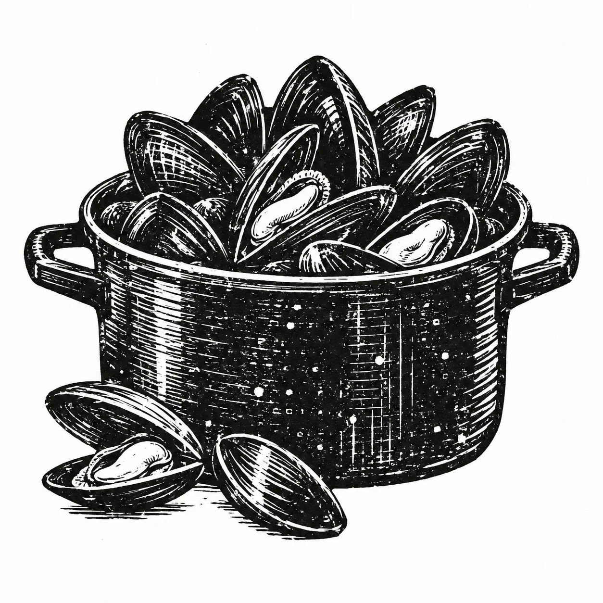
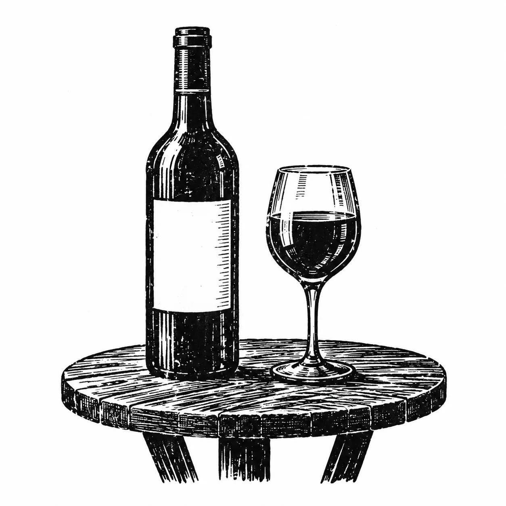
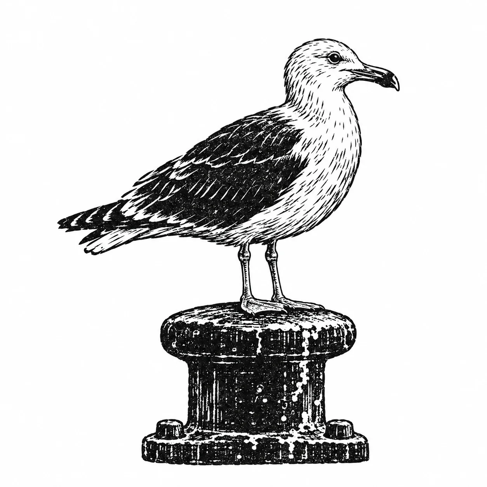
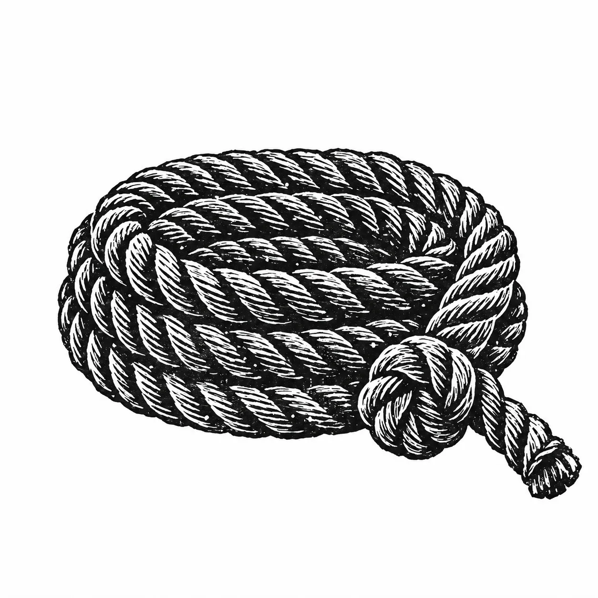
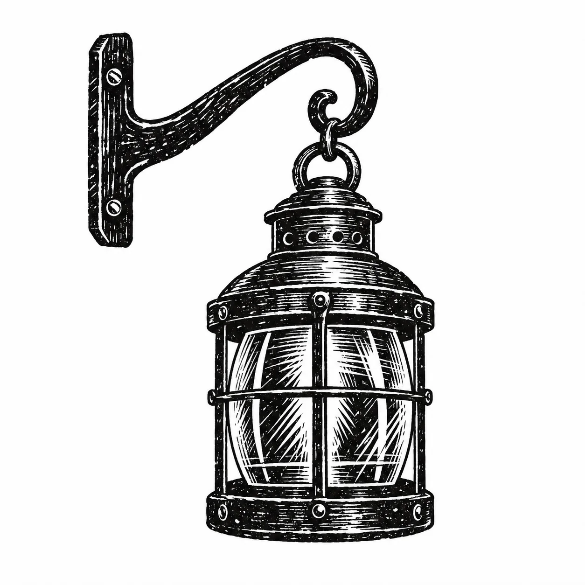
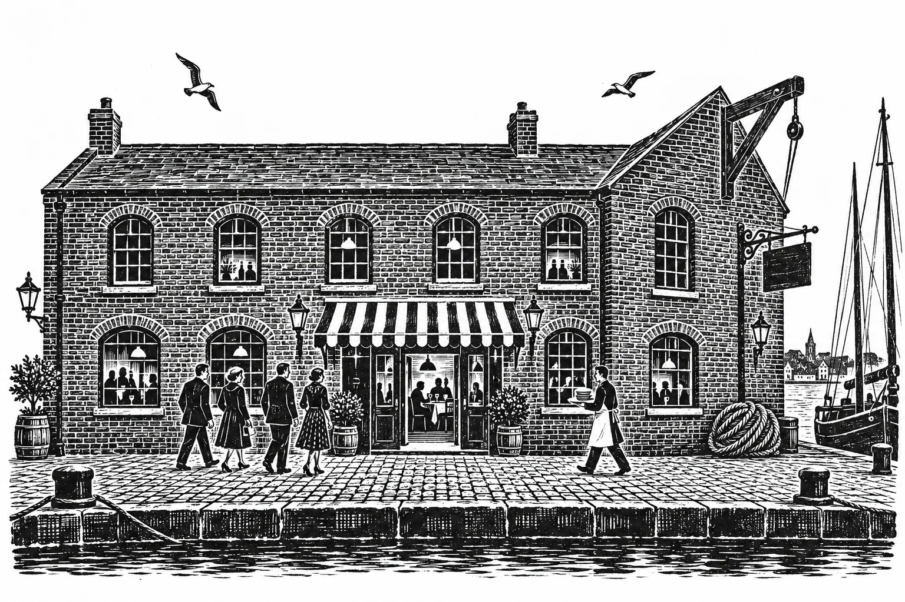

Today’s Bill of fare
Lunch and dinner

The wine bar twelve by the glass

A short history of the walk, 1791 to 1934

The hoist loft a private room for twenty-two

Dining rooms and a wine bar The Quay, Harbourside, Bristol
On the quay
The dining rooms serve lunch until half past two.


18:48
Down towards the gorge this evening.
The terrace opens with the bar.
The lamps on the quay are lit at sunset, and so is our sign.
Lunch and dinner



